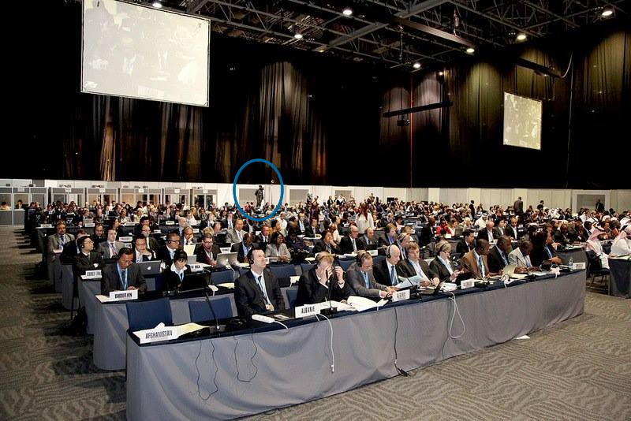

The History of Wave®
In 2012 Wave® was founded and financed by a small defence communications community within Britains 'Home of Cyber Professionals': The Royal Corps of Signals . The groups charter is very simply Internet as a Right (IaaR) - which is expected to occur after significant investment is made in technology, defence and law. Wave represents the first key area and will mainly focus on the design, development and distribution of the world first Free Internet Solution.
"Bravo, I Admire - Pluck & Spirit" Sir Michael Moritz, Sequoia Capital
Wave® saught council from many technology and business leaders including Thomas Power (husband to Penny Power OBE and former apprentice to Sir Alan Sugar) and Dr Richard Stallman (President of the Free Software Foundation). Then in 2012 Wave's Founder & CEO: Siôn Buckler, flew to the Trade Center in Dubai to attend the World Conference of International Telecommunications (WCIT). An event hosted by the UN's International Telecommunications Union (ITU) and attended by 147 world leaders.

Google warned that the event "threatens the free and open internet", while the hacking group Anonoymous launched cyber attacks which caused the conference to suffer network outages. Siôn, also a British public servant, was the only impartial body to volunteer to attend the event and provide public oversight, by supervising the entire conference. Prior to the final vote, Siôn reported what he was witnessing to world leaders and his own Government back in Britain. This report highlighted the unlawful acts by the ITU and EU representatives to actively obstruct public oversight and input from the British general public. Even Wave's charter (suggesting internet access become a free and inherent right) never made it from Members of UK Parliment and EU representatives into the debate, despite Wave® being heavily invested in by more than 50 British Armed Forces personel in the defence communications industry. So Siôn took action and handed out the Wave® whitepaper directly to the 147 world leaders:
"Caused a certain amount of constination in the room" Sarah Parkes, Broadband Commission for Digital Development
The UK Prime Minister himself responded to Siôn's report by questioning, rejecting and withdrawing the UK from the treaty. The US Government and a large majority of other Member States then followed suite and withdrew from signing the treaty. On the final day of signing, almost every member state had rejected the treaty. Shortly afterwards the ITU Secretary General resigned and UK Citizens voted to leave the EU. After reading the Wave® Whitepaper, attendees of the WCIT partnered with companies such as Google, Virgin, Vodafone and Facebook to launch their own free internet innitiatives - many of which did not manage to overcome the technical challenges and no longer exist today.
"Philosophical Differences. Hijacked the conference" White House Technology Advisor: Terry Krammer
Wave® has remained focused on its charter and made considerable and notable advances towards fulfilling its charter. By 2014 Siôn and his defence communications community had invested and loaned more than half a million pounds to the research and development of Wave®. The entire operation also moved from Britain to Casa De Campo: a 5* Golf Resort in the Caribbean. Then again to a custom built campus on the northern east coast of the island, the Scottish Bay. Wave® also gained its biggest single investment of more than $100,000 USD in 2015, moved to a more strategically valuable campus on the Scottish Bay and upgraded its security from two (3-time decorated) private military security contractors to a small team of dedicated, unifomed personel.
By 2016 Google's Chairman and CEO at the time (Eric Schmidt) started to endorse Wave® posts on Social Media, which was followed shortly afterwards with Google's Patents division approaching Wave® and awarding $2Million of security patents (aquired from Motorola©). An employee of Google's Secret division (Team X) also visited the Wave® campus and awarded Wave's dedicated defence force (Caribbean Communications Unit) an island wide contract for Google Loon Balloon recovery - which included authority and budgets for drones, a helicopter and a dedicated Air Traffic Control System.
Today Wave® is producing its own technology products, operated by the new Wave® Operating System: Hotspotβnβ. After some brainstorming with US Marine Lt. Col Curtis Van-Sant, Wave® even founded a new collective term and two spin-off projects. These include: Internet as a Right (IaaR), Caribbean Communications Unit (CCU) and the Scottish Bay Society;
DATRO CONSORTIUMSubscription-Free Internet & IPTVThe mission of Wave® is to produce a simple, free (or low cost) solution for making internet access free for the general public. Wave® operates within a strict scope, focusing on the free internet software & products, supporting technical documents and service/ support. The day to day work at Wave® is largely perfection and upkeep of the software, source code, supporting technical documents and its overal presentation. The goal is to reach the largest possible audience in the shortest period of time and maintain a stable and dependable network. Siôn Buckler is the Founder & CEO of Wave®.
Internet as a Right Inherent & InalienableInternet Access X as a Right (aaR) is a new new collective term introduced by Sion Buckler in 2018. Where X may mean Education, Free-Speech, Self-Defence etc. Since access to Internet has now been deemed a basic human right by the United Nations, X could also now mean Internet. And so IaaR was born. This is to say that access to internet and/or internet itself, is inherent and inalienable and not a privilage or benefit of membership to any given society/ regime. The flaw in the ideology of internet becoming a right, is the fact internet is still a paid service and so it continues to be a benefit. Free Internet Access from Wave® solves this dilemah and ensures access to internet is truely inherent and inalienable.
Caribbean Comms Unit Society & Infrastructure Defence ForceCaribbean Communications Unit (CCU) was formed to produce, maintain and defend a series of mesh-networked, solar-powered, geodesic equipment rooms operated by the Wave® Operating System: Hotspotβnβ. The result is the worlds first free internet and IPTV infrastructure level solution. The day to day work at CCU involves production, installation and ongoing maintenance of the Neo Dome® equitment rooms. The solution is also supported with technical documents and blueprints which enable the Neo Dome® solution to be easily re-produced by architects, builders and engineers almost anywhere else in the world. Siôn Buckler holds office as CCU's Head of Defence.
Scottish Bay SocietyContingent SBA/ British Protectorate The Scottish Bay in the Caribbean is a 70km coastline in the Caribbean, which will become home and a showcase for the worlds first free internet service. CCU will provide maintenance and defence for the physical network, Wave® will source the Software and a number of companies will provide hardware. IaaR will help local authorities explore ways to make this new free internet service an inherent & inalienable right for residence of the Scottish Bay. Siôn Buckler holds office as a military strategist, until his Oath as a British Crown Public Servant expires in 2024. Learn more
In 2018 Wave® migrated its free internet software soltuion to a free and open-source model. Wave® also incorporated as a for-profit company, projecting $100Million+ turnover a year from as soon as 2020. A mere fraction of the revenue expected to pass between advertisers and internet service providers using Wave® technologies. Since global annual display adversing expendature has now exceeded $200Billion (and continues to climb each year). While cost (and demand) of connecting the worlds unconnected, continues to grow. Wave® acts as a bridge between the two, improving ad targeting for advertisers, while simultaniously subsidising the cost of connectivity by up to 100%. And with no more cost barriers to internet connectivity, the unconnected will finally become connected.
As of 2018 Wave® released version 0.0.4 of Hotspotβnβ. This is a reverse engineered version of the Software System Operating the in-house prototype. The software has been re-written as a script for quick product assembly, installation and network growth. It can install to a device and configure itself fully-automatically (plug & play). The software is also able to self-update.
In April 2019 version 0.5.0 of Hotspotβnβ was released. The solution features many changes including a built-in game station, virtual gamepads and a free iptv service. As of 2019 Wave® is also holding a Series A Funding Investment Round (exchanging 15% equity in order to raise a further $2.5Million USD).